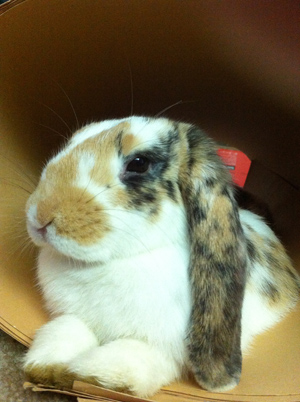

Lops were developed with the intention of creating a rabbit which was easy to handle and hardy enough to withstand handling and cuddling from children. Lop Rabbits have a very playful yet laid back temperament making them an ideal pet. They have lop ears and only weigh up to 4lbs.

Flemish Giants are Large
This breed is characterized for being able to weigh up to 20lbs. Due to it's large size they need special handeling but are docile and tolerant pets as long as they get frequent interaction with humans. Unfortunately this breed is not only used as a pet but also for meat and fur.